Teaching a language model a language it never knew: continued pretraining, supervised fine-tuning and reinforcement learning on one laptop
The model is right and the language is wrong
The last three posts were about getting tokens out of a machine faster. This one starts a step earlier, with a problem that speed doesn't touch. You have found the model you want. It's small enough to run where you need it, it's fast on the hardware you have, its licence is fine, and its English is good. Then you type a sentence in your own language and it produces nothing usable. Not slow, not wrong in an interesting way; just noise, because the model has never seen the language, and the tokenizer under it has never seen the script.
For me the language is Hindi and the model is SmolLM2-135M, Hugging Face's smallest text model. It was trained on 2T tokens, which is a serious budget for 135 million parameters, and the paper's data section is titled, in full, "3.2 English web data". Nothing in it is Hindi on purpose. Here is what that looks like from the outside, measured before anything else in this post was done. A thousand held-out Hindi web documents cost the stock tokenizer 5.32 tokens per word against 1.33 per English word, a 4.0x tax on every prompt and every generated token. The model's loss on that Hindi text, expressed in bits per character so that the number doesn't depend on the tokenizer, is 2.35; on English text from the distribution it was trained on it's 0.87. (The two languages aren't directly comparable in bits per character either, but a factor of nearly three is not a subtlety.) And when asked, in Hindi, what the capital of India is, greedy decoding gives one real Hindi word repeated until the length limit; asked to judge a phone review, it gives a string of Devanagari digits.
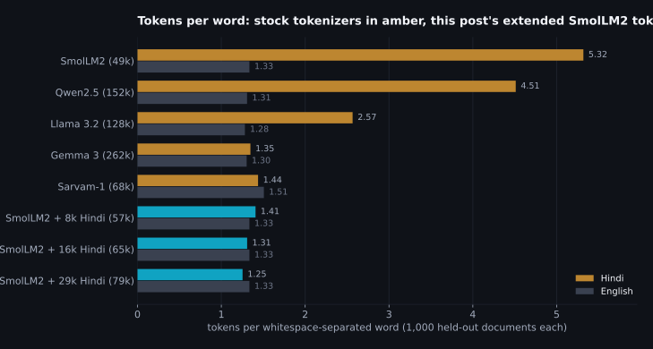
The obvious fix is to pick a different model, and the chart says why that isn't as easy as it sounds. Tokenizer size is not language coverage. Qwen2.5's vocabulary is three times the size of SmolLM2's and it still spends 4.51 tokens per Hindi word. Llama 3.2's 128k vocabulary, with its 28k tokens set aside for other languages, gets to 2.57. Only two of the stock tokenizers here treat Hindi about as well as English: Gemma 3, which inherits Gemini's 262k-entry SentencePiece model, and Sarvam-1, a 2B model built in India with a tokenizer designed for Indic scripts first. Neither is 135M parameters. And a tokenizer that handles the script is only the entry ticket; the model behind it also has to have read enough of the language. The next chart is the same held-out Hindi text scored by every stock model I could fit on this GPU.
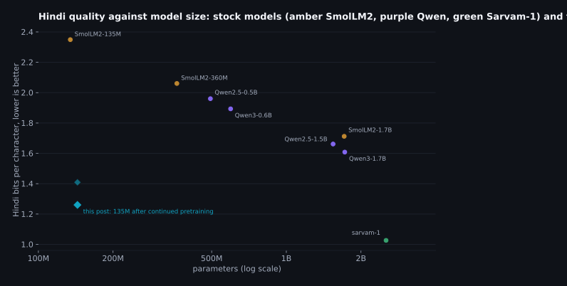
So this post is about the other option: keep the model you chose and teach it the language. The process has a name, language adaptation, and a shape that has been stable since the Chinese-LLaMA work in April 2023: add tokens for the new script to the vocabulary, give the new rows of the embedding table sensible starting values, continue pretraining on text in the language while feeding back a little of the original language so the model doesn't forget it, and then do the post-training that turns a text predictor into something that answers. I wanted to know how much of that pipeline fits on one laptop with an 8 GB GPU, how much of the published recipe survives contact with a model this small, and which of the choices along the way actually move the number. Everything below was run on the same machine as the first two posts, an RTX 5060 laptop GPU that manages 17.2 TFLOPS of bf16 matrix multiplication when it's warm, with every number written to a results file by the script that produced it.
A note on what I'm claiming, because the blue diamond in that chart is the kind of point that invites overclaiming. One afternoon of training on a laptop does not produce a Hindi model that beats a model ten times its size at everything, and the post has two charts that say so: one on Hindi text the model never saw, where the margin over the best general-purpose stock model under 2B shrinks to a couple of hundredths of a bit, and one on a task where the newest 1.7B is level with it. What it does produce is a 135M model that reads Hindi text about as well as general-purpose stock models twelve times its size, answers a Hindi classification task in a fixed format as well as the best of them, a loss curve that hadn't flattened when I stopped, and a recipe where every stage is a short script you can read. The interesting part is the shape of the curve, what each stage cost, and what went wrong in the last one.
The result in one screen
For the reader who wants the outcome before the method: the same model, measured before and after, on data it never trained on. Every number in this table is explained and re-measured in the section that produces it.
| Measured on held-out data | Stock SmolLM2-135M | After this post |
|---|---|---|
| Tokens per Hindi word (English unchanged at 1.33) | 5.32 | 1.31 |
| Hindi text, bits per character: web crawl / Wikipedia (lower is better) | 2.35 / 2.35 | 1.26 / 1.59, under every general-purpose stock model up to 1.7B |
| "What is the capital of India?", asked in Hindi | one word repeated until the length limit | भारत की राजधानी नई दिल्ली है। |
| Hindi sentiment, answered as JSON, 598 reviews | 0.069 accuracy, valid JSON in 0.161 of answers (the stock instruct model) | 0.945 accuracy, valid JSON in 0.998 of answers; Qwen3-1.7B scores 0.940 |
| GPU time for the pipeline that produced it | 68 min continued pretraining, 18 min SFT, 24 min GRPO, on an 8 GB laptop GPU |
The pipeline that did it is the one the labs run, in the order they run it: extend the tokenizer, initialise the new embeddings, continue pretraining on the language with a little of the old one mixed in, fine-tune on instruction pairs, then reinforcement learning against rewards a script can check. The papers in the next section are the same five stages with more zeros on the token counts. That's also the honest answer to "what would it take to scale this": more Hindi tokens, since the curve in the continued pretraining section is still paying when I stop; more GPUs for that stage, which changes how many copies of the training loop run in parallel and nothing inside the loop; and a larger model to start from. The tokenizer method, the replay, the cold start and the reward-checking stay as they are. What a lab adds on top is data cleaning at a scale I can't do and people to label preferences, which is the one stage this post skips on purpose.
| Section | The question it answers |
|---|---|
| How the large labs do it | What pretraining, continued pretraining, supervised fine-tuning and reinforcement learning each are, in the order they actually happen, and which parts need a thousand GPUs and forty annotators. |
| The plan for one GPU | The same five stages sized for 8 GB of memory and an afternoon. |
| The tokenizer | Why a byte-level BPE tokenizer built for English can't form a Hindi word even in principle, and how to add 16,000 tokens without changing a single English token. |
| New embeddings | How to fill 16,000 new rows of the embedding table so the model doesn't start from noise, measured three ways. |
| Continued pretraining | Fitting the training loop in 8 GB, what the English replay share and the learning rate do, the main run, and what the curve says about continuing. |
| Teaching it to answer | A short supervised warm-up in chat format, what it costs the text model, and the hundred examples that decided whether RL had anything to learn. |
| Rewards a script can check | GRPO written out in full, two verifiable rewards, the hack the optimiser found in one of them, the repair, and what RL can and cannot see. |
| Where it lands | The 135M against stock models up to 1.7B on the task, the same prompts at every checkpoint, and what it all cost. |
How the large labs do it
Before the recipe, the map, because the words get used loosely and the order matters. What follows is the pipeline as the labs themselves describe it in their papers, with the numbers they published. I've kept to primary sources; where the only source is a press article or a model card, the sources section says so.
Pretraining is next-token prediction on as much text as the budget allows. SmolLM2-135M saw 2T tokens on 256 H100s. Llama 3 405B saw 15.6T tokens on up to 16,000 H100s, and its data mix was 50% general knowledge, 25% mathematical and reasoning, 17% code, 8% multilingual, so even a frontier model gives a twelfth of its reading to every language other than English put together. Nobody outside a lab repeats this stage. What you can repeat is the next one.
Continued pretraining is the same objective, the same loop, started from the pretrained weights and pointed at new text. When the new text is a language the model hasn't seen, it's called language adaptation, and it usually comes with a change to the tokenizer. Chinese-LLaMA added 20,000 Chinese tokens to Llama's 32,000, which roughly halved the token count of a Chinese sentence, and continued on a 20 GB general Chinese corpus. Swallow added 11,176 Japanese subwords to Llama 2 and continued for 100B tokens at a 9:1 Japanese-to-English ratio, and reported that the vocabulary expansion cut Japanese token counts by 56% with no effect on most benchmarks. Sarvam's OpenHathi did the same for Hindi on Llama 2 in December 2023. The other thing every one of these did is keep some of the original language in the mix, because a model trained only on the new language forgets the old one; the cleanest study of that, Ibrahim and colleagues in March 2024, found that replaying 5% of the old data is enough for a mild distribution shift and 25% for a strong one, their example of a strong one being English to German, and that the learning rate has to be warmed back up and decayed again rather than resumed where the original run left it.
Supervised fine-tuning is where the text predictor becomes a thing that answers. The model is shown prompts and good responses in a chat format and trained on the responses only. InstructGPT, the paper behind the first ChatGPT, did this on about 13k prompts written and answered by about 40 contractors. It's smaller than people expect. Airavata, the Hindi instruction model built on OpenHathi, used 385k mostly machine-translated examples, kept only when a back-translation scored well enough.
Reinforcement learning comes after that, and it comes in flavours that are worth keeping apart because only one of them is available to a person with a laptop. InstructGPT's version is RLHF: contractors compare pairs of model answers (33k prompts' worth), a reward model is trained to predict their preferences, and the policy is optimised against the reward model with PPO on another 31k prompts. The human feedback is in the reward model, not in the loop; the loop runs against a learned proxy. Anthropic's Constitutional AI replaced the human comparisons for harmlessness with an AI judge applying 16 written principles, which is RLAIF. Llama 3 ran 6 rounds of collecting preferences, sampling from the latest model, fine-tuning on the best samples and then DPO, the paper's reason being that DPO required less compute and performed better, especially on IFEval. Qwen2.5's recipe is SFT, then DPO, then GRPO. All of these need either people or a strong judge model to produce the preference data, and that is the part a solo developer doesn't have.
The flavour you do have is the one DeepSeek made famous. DeepSeekMath introduced GRPO in February 2024: sample a group of answers to each question (64 in the paper), score them, and use the group's own mean as the baseline instead of training a separate value model. DeepSeek-R1, a year later, showed that a rule-based reward, a script that checks whether the final answer matches the reference and whether the output has the right format, is enough to lift a base model on AIME 2024 from 15.60% to 71.00% pass@1 with no human preference data at all. Tülu 3 gave the idea its name, RLVR, reinforcement learning with verifiable rewards. Two details from the R1 paper matter here. First, the pure-RL model (R1-Zero) was hard to read, so the released model started with a "cold start" supervised stage on thousands of long CoT examples before RL (exact count not stated). Second, R1-Zero kept mixing languages inside its reasoning, so they added a language-consistency reward, the share of target-language words in the reasoning, and accepted a slight degradation in performance for the readability. A model that has just learned Hindi and is being asked to answer in it needs exactly that reward.
Which corrects the version of the pipeline I had in my head when I started, and probably the version most people carry around. The order is pretraining, then continued pretraining if the language or domain changes, then supervised fine-tuning, then RL; RL on a raw base model is the exception R1-Zero proved possible, not the rule. "Human feedback" means preference comparisons that train a reward model, which is a labelling operation, not something that happens while you train. And the human-free version, verifiable rewards, is not a compromise for people without annotators; it's the method the current reasoning models were built with. The table is the whole map in one place.
| Stage | What it optimises | At a lab (published) | On this laptop (this post) |
|---|---|---|---|
| Pretraining | Next token on everything | SmolLM2-135M: 2T tokens, 256 H100s, English | Not repeated; the whole point is to keep it |
| Tokenizer change | Tokens per word in the new language | Chinese-LLaMA +20,000, Swallow +11,176, Llama 3 +28k for non-English | +16,000 Hindi tokens; English tokenization unchanged |
| Continued pretraining | Next token on the new language, with replay | Swallow 100B tokens at 9:1; Ibrahim et al. replay 5 to 25% | 49.2M tokens at 90:10, 68 minutes |
| Supervised fine-tuning | Answers in a chat format | InstructGPT about 13k prompts, about 40 labelers; Airavata 385k translated | 12,099 translated Hindi pairs, 18 minutes |
| RL: preference-based (RLHF, RLAIF, DPO) | A learned reward model or a judge's preferences | InstructGPT 33k comparisons; Llama 3 6 rounds of DPO; Constitutional AI | Not available; needs annotators or a strong judge |
| RL: verifiable rewards (GRPO, RLVR) | A script's score on each sample | DeepSeek-R1: accuracy and format rewards; Tülu 3 on maths and instruction following | 150 GRPO steps, two rule-based rewards, 24 minutes (the run kept) |
| Task-specific fine-tuning | One job, one format | Usually a customer's problem, not the lab's | Next post |
The plan for one GPU
Everything in the table above except pretraining and preference labelling fits on the laptop, with one adjustment per stage. The adjustment is never "use a smaller model"; it's always "use less data and fewer steps", because a 135M model is already small enough that its weights, gradients and optimizer states take under three gigabytes in full precision. What doesn't fit, as it turned out, is the activations, and the continued pretraining section has the story of getting from a training loop that spilled into system memory at 250 tokens a second to one that runs at 13.2 thousand.
The data is all public and all small. For Hindi text I streamed the first 152,730 documents (400 million characters) of FineWeb-2's Hindi-in-Devanagari subset, which is the multilingual sibling of the data SmolLM2 was trained on, deduplicated and language-filtered by the same team; the full subset has 22,095,985 documents, so this post uses under one percent of it, which is the "very small data" framing made concrete. FineWeb-2 also ships a separate test split, and 3,000 documents from it are the held-out Hindi set that nothing in this post trains on. For the English replay I took 60 million characters of FineWeb-Edu, the largest component of SmolLM2's own mix, and 12,814 documents further along the same stream as the held-out English set. For instructions, an existing GPT-4-written Alpaca set translated to Hindi, filtered to pairs that are actually in Devanagari: 12,000 for training and 500 held out. For the reward task, IndicSentiment, a set of product reviews written in English by annotators and translated by hand into Indic languages, with a positive or negative label on each: 556 reviews for the RL prompts and 598 held out for the accuracy numbers.
Read the table as the labs' pipeline with the quantities changed. Row one is the baseline; rows two to four are the "continued pretraining" box from the previous section; rows five and six are post-training, first supervised, then reinforcement learning; the last row is the held-out measurement that every section reports. The step headings below follow the same order, so at any point in the post you can place yourself in the pipeline by the step number.
| Stage | Script | Input | What it changes | Minutes on the RTX 5060 |
|---|---|---|---|---|
| Measure the starting point | tok_stats.py, eval_bpb.py | held-out Hindi (web text and Wikipedia) and English text | nothing; tokens per word and bits per character for every model in the comparison | a few per model |
| Extend the tokenizer | extend_tokenizer.py | 150M characters of Hindi | +16,000 vocabulary entries and their merge rules; English untouched | 2, on the CPU |
| Initialise the new embeddings | inside cpt.py | the stock embedding table | 16,000 new rows, each the mean of the old tokens that used to spell it | under 1 |
| Continued pretraining | cpt.py | Hindi web text, 10% English replay | every weight, 49.2M tokens | 68 |
| Supervised fine-tuning | sft.py | 12,099 Hindi instruction pairs in ChatML, plus 100 labelled reviews in the answer format | every weight, loss on the answer tokens only | 18 |
| GRPO | grpo.py | 556 labelled reviews, 2,000 open prompts, two reward functions | every weight, 150 steps of 4 prompts x 8 samples (the run kept; five runs in all) | 24 |
| Evaluate | eval_task.py | held-out reviews and prompts, this model and the stock instruct models | nothing | a few per model |
Two measurement decisions run through the whole post and are worth stating once. First, the quality of the language model is reported in bits per character of held-out text, not perplexity. Perplexity is per token, and the tokenizer changes halfway through this post; a model that spends a quarter as many tokens on the same text would look four times worse per token while being better per character. Bits per character is the total negative log-likelihood of a document divided by its length, and it doesn't care how the text was cut up. (Bits per byte is the more standard unit; for Hindi it's about forty percent of the bits-per-character figure because Devanagari letters are three bytes each in UTF-8 while the spaces and digits between them are one, and it makes Hindi look spuriously easier than English. Both are in the results files.) Second, every task number is on data the model never trained on, with the split written down in the data preparation script, because the reinforcement learning stage in particular can memorise a few hundred prompts in minutes and a number on the training prompts would mean nothing.
Step 1, vocabulary extension: the tokenizer has never heard of a matra
Here is one Hindi sentence, "the capital of India is New Delhi", through the stock tokenizer and then through the extended one. Each box is one token; a shaded block is a token that is a fragment of a UTF-8 character and can't be displayed on its own.
| Tokenizer | Tokens | Count |
|---|---|---|
| Stock SmolLM2, Hindi | ░ ░ ा र त ␣क ी ░ ░ ा ░ ░ ░ ░ ा न ी ░ ░ ░ ░ ░ ░ ि ░ ░ ् ░ ░ ी ░ ░ ░ ░ ░ ░ | 36 |
| Extended, Hindi | भारत ␣की ␣राजधानी ␣नई ␣दिल्ली ␣है । | 7 |
| Stock SmolLM2, English | The ␣capital ␣of ␣India ␣is ␣New ␣Delhi . | 8 |
| Extended, English | The ␣capital ␣of ␣India ␣is ␣New ␣Delhi . | 8 |
36 tokens for seven words, most of them single bytes. The stock vocabulary has 22 entries that contain any Devanagari at all, out of 49,152, and on the held-out Hindi text it uses 6,847 distinct tokens, nearly all of them byte fragments and punctuation. That's the cheap part of the diagnosis. The expensive part took me an afternoon, and it's the reason a naive vocabulary extension gets you almost nothing.
SmolLM2's tokenizer is a byte-level BPE in the GPT-2 family. Before any merges are applied,
the text is cut into pieces by a regular expression, and BPE can only merge within a piece.
The pattern is the GPT-2 one, and the part of it that catches words is \p{L}+: a
run of letters. In Unicode, a Devanagari consonant is a letter, but the vowel signs attached
to it, the matras, are combining marks, category M, not L. So the pre-tokenizer splits every
Hindi word at every vowel sign. In the sentence above, "राजधानी" (capital) becomes 6 pieces
before BPE even starts, and no amount of training could ever produce a token for the whole
word, because the word never reaches the merge step in one piece. The same pattern, or its
close relatives, sits under GPT-4's tokenizer, Llama 3's and Qwen's, which is part of why the
chart in the first section looks the way it does; the SentencePiece tokenizers behind Gemma
and Sarvam don't pre-split on a regex at all.
The fix is one character class. I widened \p{L}+ to
\p{L}[\p{L}\p{M}]*, a letter followed by any run of letters or marks, and moved
the pattern from the built-in ByteLevel pre-tokenizer into an explicit Split step so the
library would use it. On English text the two patterns behave identically, because English
text contains almost no combining marks; the script checks this on every wikitext test article
and on a thousand FineWeb-Edu documents, and out of 1,321,860 English tokens,
85 (0.006%) come out differently, every one of them next to a
non-Latin character. Then the rest of the recipe is what Chinese-LLaMA did in 2023, plus the
details that cost me the afternoon:
- Train a Hindi BPE on Hindi text with the widened pre-tokenizer, 150M characters, then keep only the merges whose result contains a non-ASCII byte. A Hindi corpus also teaches merges like "th" and "in" from the English words inside it, and those would change English tokenization; the model already has them. That drops 2,295 of the learned merges and keeps 16,104, producing 16,000 new vocabulary entries.
- Remove the duplicates; the order turns out not to matter. BPE applies merges in priority order, and a merge list is a ranking, so I assumed the Hindi merges had to go in front of the stock ones. Measured, it makes no difference: Hindi merges first or last, the result is 1.31 tokens per word either way, because the two lists act on almost disjoint byte pairs. What does matter is the 101 pairs that exist in both lists. When the library builds its lookup table the later copy wins, which silently demotes those pairs to the lowest priority and reorders the Hindi merge path in a way that produces tokens for half a character: with the duplicates left in, the same vocabulary gives 2.78 tokens per word and only 2,914 of the 16,000 new tokens ever appear on the test set, against 10,422 when the stock copies are dropped.
- Watch the loader. transformers' GPT-2 tokenizer class rebuilds the byte-level pre-tokenizer from its own settings when it loads a directory, throwing away the widened pattern, and the narrow pattern alone takes the same vocabulary from 1.31 to 3.38 tokens per word, with 1,050 of the new tokens reachable. Setting the class to the generic fast tokenizer makes it load the file as written. The script asserts the loaded pre-tokenizer keeps a test word whole, and my first attempt, which had both this and the duplicates wrong, reached 4.0 tokens per word and looked like a modest success until I looked at the pieces.
With those in place the extended tokenizer round-trips every held-out Hindi document exactly, takes 1.31 tokens per Hindi word instead of 5.32, a factor of 4.1, and is byte-for-byte the same tokenizer on English. I built three sizes to see how much vocabulary the language needs.
| Hindi tokens added | Vocabulary | Hindi tokens per word | Hindi characters per token | Distinct tokens used on held-out Hindi | New embedding parameters |
|---|---|---|---|---|---|
| 0 (stock) | 49,152 | 5.32 | 0.95 | 6,847 | 0 |
| 8,000 | 57,152 | 1.41 | 3.58 | 14,726 | 4.6M |
| 16,000 | 65,152 | 1.31 | 3.85 | 21,877 | 9.2M |
| 29,369 | 78,521 | 1.25 | 4.02 | 30,289 | 16.9M |
The first eight thousand tokens do almost all the work; the next eight thousand buy seven percent and the thirteen thousand after that another five. I went with 16,000 for the rest of the post, which puts the Hindi fertility slightly better than Gemma 3's 1.35 and Sarvam-1's 1.44 on this text, at the cost of 9.2M new parameters, about seven percent of the model. Whether those rows are worth it against 29,000 is a question the continued pretraining section answers with a chart rather than an opinion, since new embedding rows are only useful once they've been trained.
Step 2, embedding initialisation: 16,000 new rows, and how to fill them
A token the model has never seen is a row of the embedding table, 576 numbers, and in SmolLM2 the same table is used as the output layer (the weights are tied), so each new row is also what the model compares its final hidden state against when it decides whether to emit that token. Resize the table to 65,152 rows and the new ones have to contain something. Three options, all cheap:
- Random. Normal noise at the scale of the existing rows. The model starts out unable to read or write any Hindi token and has to learn all of it from the gradient.
- The library default. transformers'
resize_token_embeddingsfills new rows with samples from a Gaussian fitted to the old rows' mean and covariance. The new rows look statistically like tokens but mean nothing in particular. - The mean of what the token used to be. Every new Hindi token was, under the stock tokenizer, a sequence of byte-fragment tokens the model already has embeddings for. Average those rows. The new token "भारत" starts out as the average of the six byte tokens the old tokenizer spelled it with, which is a coarse but real representation. This is the simple end of a line of work (WECHSEL, FOCUS) that builds the new rows as weighted combinations of old ones; FOCUS reports its version reaching a masked-language-model loss of 4.00 where random initialisation sat at 24.00, with much smaller gaps on downstream tasks.
There's a trap in the third one worth a sentence. Byte-level BPE merges happily cross UTF-8 character boundaries, so some of the new tokens are the last byte of one character plus the first two of the next, and decoding one of those to text gives a replacement character. The averaging has to be done on the byte-level strings directly, not on decoded text; the script does, and logs how many of the new tokens average more than one old row.
Whichever way the rows are filled, the model is worse at Hindi the moment the tokenizer changes, because it is now being asked to predict tokens it has never predicted. With the mean initialisation the held-out Hindi score goes from 2.35 bits per character under the stock tokenizer to 3.62 under the extended one before any training, and English is untouched at 0.86 because no English token changed. The chart is the first 400 steps of continued pretraining from each of the three starting points, with everything else identical.
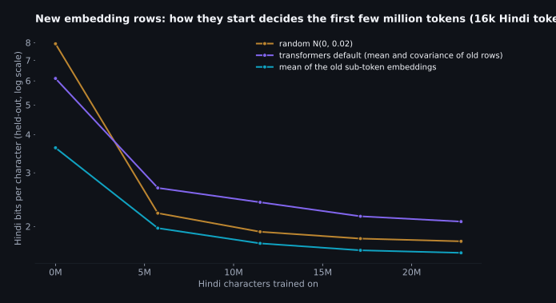
The starting points are far apart: 3.62 bits per character from the mean initialisation, 6.11 from the library default and 7.94 from random noise, all on a model that scored 2.35 an hour earlier with its old tokenizer. Four hundred steps later the mean start is still ahead and the other two have swapped places: 1.64 against 1.79 for random and 2.08 for the default. The random rows also cost some English at the start (0.90 against 0.86), because with tied weights every new row is also a candidate in the output softmax, and 16,000 rows of noise steal probability from every English prediction until they're trained down. The library default was the surprise. Rows drawn to look statistically like the old ones start out better than noise and end up worse than it, and I don't have a clean explanation; my guess is that rows that resemble real tokens compete harder in the output layer than rows that resemble nothing, and take longer to be pushed out of the way. Whatever the reason, the cheap thing (average what the token used to be) won by a margin that 6.6M tokens didn't close, which is FOCUS's result in miniature: the gap in loss is large and persistent, and a good start is worth a lot of training.
Step 3, continued pretraining, first half: fitting the training loop in 8 GB
The training loop is a hundred lines of plain PyTorch: pack the tokenized text into 1,024-token windows, draw each window from Hindi or English by a coin weighted at the replay ratio, run the model, cross-entropy, AdamW, linear warmup then cosine decay, clip the gradient at one. No Trainer class, no accelerate, because I wanted to see where every byte went, and it turned out to matter. The first version, the textbook one with fp32 weights and bf16 autocast, ran at 3,710 tokens a second with two sequences per micro-batch and fell over with four. Two sequences of 1,024 tokens through a 135M-parameter model should not need 8.40 GB.
A hook on one decoder layer said where the memory was: 137 MB of saved
activations per layer for 2,048 tokens, 95 of them in the attention block. That
is the size of the full attention matrix, nine heads by 1,024 by 1,024 in bf16 for two
sequences, which a fused attention kernel is supposed never to materialise. The model uses
grouped-query attention (nine query heads, three key-value heads), transformers passes
enable_gqa=True to PyTorch's scaled-dot-product attention when there's no padding
mask, and on this card with this PyTorch that combination dispatches to the maths fallback,
which writes the attention matrix out for the backward pass. Repeating the key and value
heads to nine before the call, a few megabytes, lets the memory-efficient kernel run instead.
One five-line patch, and the activations for 2,048 tokens went from 4,117 MB to
1,637 MB, throughput from 3,710 to 10,165 tokens a
second at the same micro-batch. This is the second time in this series that the fix was a
dispatch decision rather than arithmetic, and I've stopped being surprised.
The rest of the headroom came from two standard moves. First, the model itself runs in bf16 and the optimizer keeps its own fp32 copy of the weights, updating that and writing it back after each step; that halves every saved activation without the precision loss of updating bf16 weights directly with a learning rate of a few ten-thousandths. Second, the output layer is the one place where a small model is briefly big: 65,152 logits per position, in fp32 for the loss, is a gigabyte per 4,096 tokens before the gradient. Computing the cross-entropy 512 positions at a time inside a checkpoint, so the logits are rebuilt in the backward pass rather than stored, removes that. With those, four sequences per micro-batch fit in 5.79 GB and the loop runs at 13,082 tokens a second (the main run later sustained 13.2 thousand between evaluations), which is the number every training minute in this post is built on. Gradient checkpointing of the whole model, the usual advice, was the wrong tool here: it fit the same batch in less memory but at 1,657 tokens a second, because the recompute is a full extra forward pass on a model that's launch-bound to begin with.
| Configuration (1,024-token sequences) | Micro-batch | Peak memory | Tokens per second |
|---|---|---|---|
| fp32 weights, bf16 autocast, stock attention dispatch | 2 | 8.40 GB | 3,710 |
| same, with gradient checkpointing | 4 | 5.9 GB | 1,657 |
| fp32 weights, bf16 autocast, K/V repeated before attention | 2 | 6.0 GB | 10,165 |
| bf16 weights with fp32 master copy, chunked loss, K/V repeated | 2 | 4.2 GB | 7,262 |
| same | 4 | 5.79 GB | 13,082 |
| same | 6 | 7.5 GB | 11,875 |
Four sequences of 1,024, accumulated over four micro-batches, is 16,384 tokens per optimizer step, and that's the step every run below counts in. At 13,082 tokens a second, a hundred steps is two and a quarter minutes and a hundred million tokens is a bit over two hours; I'll come back to what that buys.
Step 3, continued pretraining, second half: what the knobs do, and the main run
Four hundred steps is 6.6M tokens and about ten minutes, which is cheap enough to ask the recipe's questions one at a time. Each ablation below is a single run with everything held fixed except the one thing named, all from the same shuffled data order, all scored on the same held-out documents. The vocabulary is the first question, because it changes what a step means.
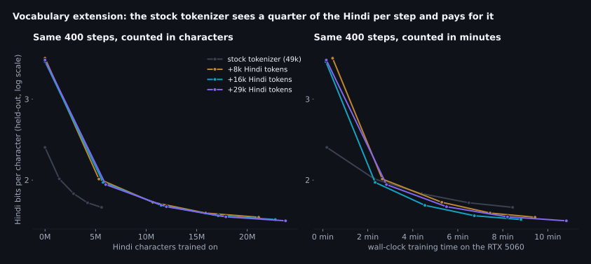
Read the left panel first, because it says something I didn't expect. Per character of Hindi seen, the stock tokenizer learns faster: by 6M characters it's at 1.74 bits per character and the extended tokenizer at that point is still at 1.98. That's not a paradox. Under the stock tokenizer a character is four tokens, so every character gets four forward passes and four gradient updates, and the model already knows its byte tokens. The extended tokenizer is spending its first hundred steps learning what 16,000 new rows mean. But nobody trains by the character; they train by the step, and the right panel is the same runs in minutes. There the extended tokenizer passes the stock one inside three minutes and ends the 400 steps at 1.64 against 1.74, having seen 23M characters to the stock run's 6M in the same time. And that's the training side only. At inference the extended model reads and writes Hindi in 4.1x fewer tokens forever, which on the bandwidth arithmetic of the first three posts is 4.1x the words per second and 4.1x the context. The three extended sizes end within a few hundredths of each other (1.66, 1.64 and 1.63 for 8k, 16k and 29k added tokens), which says the vocabulary size is a fertility decision, not a quality one, at least at this budget; more rows are more parameters to train and the extra rows are the rarest words.
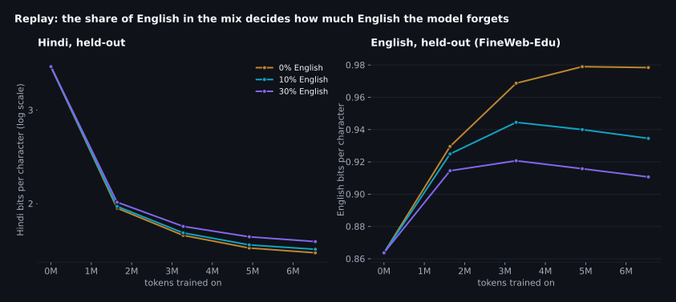
This is the ablation whose result I'd have bet on and still found useful to see. With no English in the mix, Hindi reaches 1.62 bits per character after 400 steps, the best of the three by a hair, and English goes from 0.87 to 0.98, which is a 13% loss on text from the model's own pretraining distribution, in nine minutes. Ten percent English costs 0.025 bits of Hindi and holds English to 0.93; thirty percent costs 0.056 more bits of Hindi and holds it to 0.91. None of them holds English still, and none of them should be expected to: the model is being asked to fit a second language into the same 135M parameters, and something has to move. Ibrahim and colleagues' 25% for a strong shift and Swallow's 9:1 are the two ends of the published range; I used ten for the main run because Hindi is the point and the English loss at ten is one I'd take, and because the replay share is the one knob you can revisit later without retraining anything else.
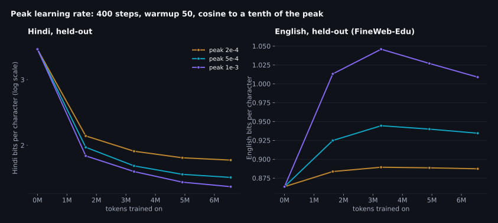
The learning rate buys Hindi with English. At a peak of 2e-4 the model reaches 1.83 bits per character of Hindi and keeps English at 0.89; at 5e-4, 1.64 and 0.93; at 1e-3, 1.55 and 1.01, which is the best Hindi of any 400-step run in this post and the worst English, a 16% loss. There's no free point on that line; the replay share and the learning rate are two views of the same trade. I took 5e-4 for the main run as the middle of the range, with the note that a longer run spends most of its time below the peak anyway, so the choice matters less than the ablation makes it look. The one setting I'd call wrong is the lowest: at 2e-4 the new embedding rows are still visibly behind after 400 steps, because 16,000 rows that start as averages need to move a long way and a small step takes longer to get them there.
The main run
With those settled (16k tokens, mean initialisation, 10% English, peak 5e-4), the main run is 3,000 steps: 49.2M tokens, of which 44.3M are Hindi, which is 171M characters of Hindi text, in 68 minutes on the laptop. For scale, that's about 43% of the Hindi I downloaded, which was itself under one percent of the FineWeb-2 Hindi subset, which is one of 1,868 language subsets in a corpus that is itself a filtered slice of the web.
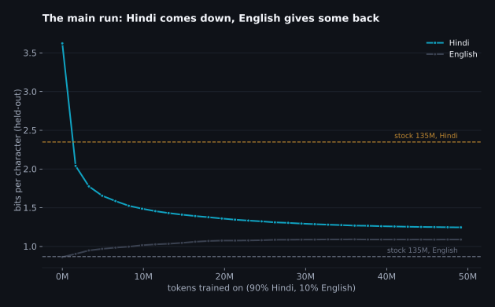
Hindi goes from 2.35 bits per character (stock tokenizer) through 3.62 (the moment the new rows go in) to 1.25 at the end, 1.26 on the larger 400-document set the size chart uses. In that chart the adapted 135M now sits below every stock model except the one built for the language: 1.61 for Qwen3-1.7B, 1.66 for Qwen2.5-1.5B, 1.71 for SmolLM2-1.7B, twelve times its size, and 1.03 for Sarvam-1, which is still a long way ahead. The 1,200-step run had already crossed all three of the larger stock models at 1.40; the main run's extra 68 minutes bought the rest. The shape of the curve is worth reading too: the last thousand steps take Hindi from 1.28 to 1.25, which is the cosine schedule running out of learning rate, not the model running out of things to learn.
The English column is the part I said I'd state plainly. It moves from 0.86 to 1.09 bits per character, a 26% loss on the model's own pretraining distribution, and most of it is in the first thousand steps; after that the curve is flat, because the learning rate has decayed to where it can't move much either way. Ten percent replay slowed the forgetting, it didn't stop it, and at this run length that is the price of the Hindi number above. The replay ablation says what the alternative costs: thirty percent held English at 0.91 over 400 steps for 0.056 bits of Hindi. If the English matters for your use, that's the knob, and it's the one that doesn't require retraining anything else. I kept ten for the main run so that the three runs in the next chart are the same recipe at three lengths.
One objection to that chart is fair and I want to meet it before the scaling section, not after. The held-out Hindi documents are from FineWeb-2, the same crawl the training text came from, and the stock models never saw that distribution. A model that has learned the style of one crawl would look better on that crawl than it deserves. So here are the same models on a second set that nothing in this post trains on: 400 Hindi Wikipedia articles, a fixed random sample from the November 2023 dump, encyclopedic register rather than web pages.
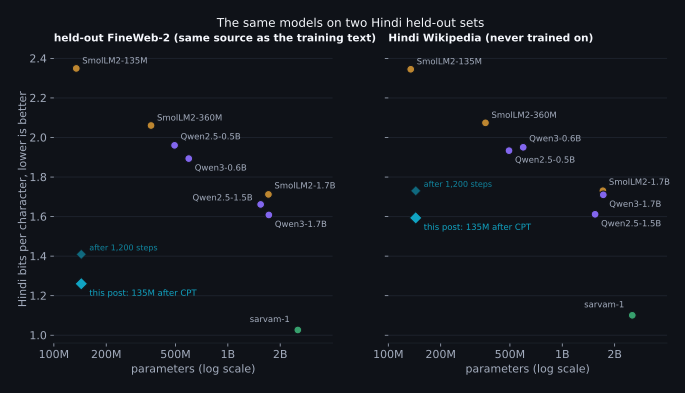
The objection is half right, and I'm glad I ran it. On Wikipedia the adapted 135M scores 1.59 bits per character, not 1.26: a third of a bit of the FineWeb-2 result was the model knowing the crawl's register, and the stock models, which never saw that register, lose nothing in the move (1.73 for SmolLM2-1.7B against 1.71, 1.61 for Qwen2.5-1.5B against 1.66). The ordering survives, just barely: on text it never trained on, the 135M is still under Qwen3-1.7B (1.71), under SmolLM2-1.7B (1.73) and a hundredth or two under Qwen2.5-1.5B (1.61), while Sarvam-1 sits at 1.03 and 1.10. The 1,200-step run does not survive it: at 1.73 on Wikipedia it's level with the 1.7B models it had beaten by a third of a bit on the crawl. So the sentence I can defend is narrower than the first chart suggests, and it's this: after 68 minutes on a laptop, a 135M model matches or edges the best general-purpose stock models under 2B on Hindi text from a source it never saw, and is a long way behind the one model that was built for the language. Every Hindi number after this point is quoted on both sets where I have both.
If we keep going
The curve above is one run, and the shape of its last third is the learning rate decaying, not the data running out; a single cosine schedule can't tell you what more data would do. The honest version of "what if we continued" is to run the whole schedule at several budgets and look at where each one ends. I have three: the 400-step ablation, a 1,200-step run, and the main run, each with its own warmup and decay, each ending at a different number of Hindi tokens.
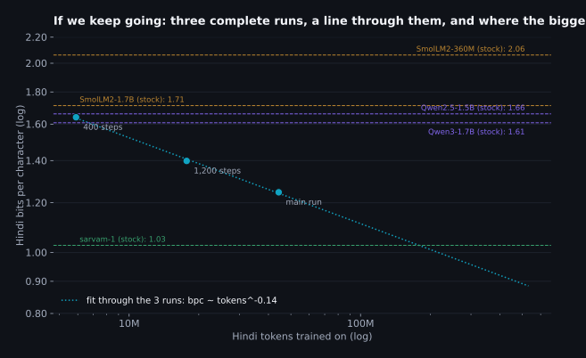
The three points sit close to a straight line on log-log axes, and the line's slope is -0.137: every doubling of Hindi tokens takes about 9 percent off the bits per character, for now. Read the horizontal lines against it. The 400-step run, ten minutes, already sits under SmolLM2-360M; the 1,200-step run is under every non-Indic stock model on the chart, including the two 1.7B models (on this set; on Wikipedia it is level with them); and the main run is clear of them on both. The line reaches Sarvam-1's 1.03 at about 179M Hindi tokens, roughly four times the main run, and I want to be careful with that number. A power law fitted to three points will fit almost anything, and these curves bend: the returns from the same data source flatten as the model learns what that source has to teach, and a 135M model has a floor that a 2B model trained on 2T tokens of Indic text does not. What the chart does support is the weaker claim, which is the one the post set out to test: the recipe keeps paying as it's extended, the rate of payment hasn't started to fall inside the range I could afford, and the larger general-purpose stock models are already behind. Getting near Sarvam-1 would be an experiment, not an extrapolation.
Step 4, supervised fine-tuning: teaching it to answer
After continued pretraining the model is a Hindi text predictor. Ask it a question and it continues the question, or writes the next paragraph of a web page that might have contained it. The supervised stage turns that into a model that stops, answers and stops again, and it needs three things: a format, data in the format, and a loss that only counts the answer.
The format is ChatML, because SmolLM2's tokenizer already carries the
<|im_start|> and <|im_end|> tokens for it. A training
example is the prompt wrapped as a user turn, then the answer as an assistant turn ending in
<|im_end|>, and the loss is masked to the assistant tokens so the model
learns to produce answers, not to predict questions. The data is 12,099 pairs from a
GPT-4-written Alpaca set translated to Hindi, kept only where both sides are at least 70%
Devanagari and the answer is under 1,200 characters, with 500 held out. Two epochs
at a peak learning rate of 1e-4 with the same warmup-and-cosine shape as before,
1,512 steps, 18 minutes.
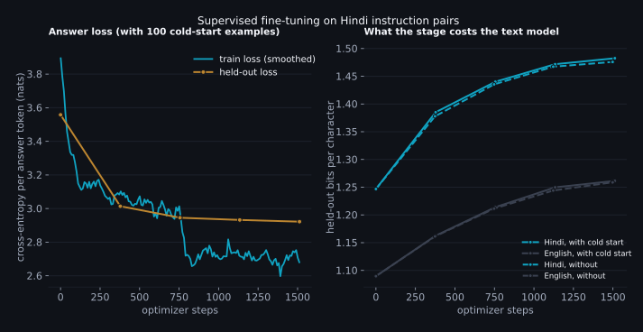
The held-out loss goes from 3.56 nats per answer token before fine-tuning to 2.92 after, most of it in the first half epoch. The right panel is the part I'd have skipped if I hadn't measured it: the Hindi text score drifts from 1.25 to 1.48 bits per character, a 19% loss, and English from 1.09 to 1.26. That is not the small price the folklore promises. The instruction data is machine-translated GPT-4 answers, a narrow register a long way from web text, and 1,512 steps at 1e-4 on a 135M model pull the whole model toward it, not just the answer style. The task numbers in the last section are what the stage is for, but if you wanted the text model back you would mix pretraining text into the SFT batches the way the replay did in step 3, or run a shorter stage at a lower rate. I left it as measured, because the next stage doesn't need the text score and the post is long enough. More useful than the loss are the answers. Before the stage, "what is the capital of India" gets a web-page fragment that loops ("in 1991 India with China in 1991 India with…"), because a base model given a question continues the page it thinks the question came from. After it, one sentence, then the end-of-turn token.
One more thing happened here that decided the shape of the next stage. The reinforcement learning step needs the model to sometimes produce a right answer, because the group advantage is computed from the spread of scores within a group, and a group of eight zeros has no spread. So I checked, before running it, how often the fine-tuned model answered the sentiment prompt with valid JSON at all. On 200 held-out reviews: 0%. Not low; zero. The instruction data has no JSON in it and no sentiment labels, and a 135M model does not generalise from "answer in Hindi" to "answer in this schema" on its own. This is the R1 paper's cold-start problem in miniature, and I took its fix: 100 labelled reviews from the training split, written as the exact JSON the reward expects, mixed into the 12,099 instruction pairs, and the stage re-run with nothing else changed. The held-out answer loss is within a thousandth (2.92 against 2.92), the drift is the same, and the JSON rate on the held-out reviews went to 100%, with 92% of the labels right. A hundred examples the model had seen twice each. That's the number to remember when a paper says the supervised stage before RL is "small": it is small in count and large in what it decides, because it's the difference between a reward signal and none. The chart above is the cold-start run; the dashed lines on the right are the first one.
The other sentence I owe the reader: the train loss on the left steps down at the epoch boundary and the held-out loss doesn't follow, which is the model starting to remember answers it has seen once. Two epochs is where I stopped for that reason.
Step 5, reinforcement learning: rewards a script can check
Now the part I expected to be hard. GRPO, as DeepSeekMath describes it, is a policy-gradient method with the value network removed: for each prompt you sample a group of answers, score them, and use the group's own mean and spread to decide which answers to push up and which down. Written out, it's short enough to read in one sitting, so here it is, abridged from the script by only the bookkeeping.
for step in range(steps):
items = sample_prompts() # B prompts: labelled reviews or open Hindi questions
p_ids, p_mask, comp_ids, comp_text = generate(items) # G sampled completions per prompt, temperature 1
# 1. score every completion with a rule, not a model
rewards = []
for i, it in enumerate(items):
for g in range(G):
c = comp_text[i * G + g]
rewards.append(reward_sentiment(c, it['label']) if it['task'] == 'sent' else reward_language(c))
# 2. advantages: how each answer did against its own group
R = torch.tensor(rewards).view(B, G)
adv = ((R - R.mean(1, keepdim=True)) / (R.std(1, keepdim=True) + 1e-4)).view(-1)
# 3. log-probability of every completion token under the current policy
lp, cmask = logprobs_of(policy, p_ids, p_mask, comp_ids) # lp: (B*G, T), cmask marks real tokens
n_tok = cmask.sum()
loss = -(adv.unsqueeze(1) * lp * cmask).sum() / n_tok # push good answers up, bad ones down
# 4. optional leash: KL to the policy we started from (logged always, penalised if beta > 0)
with torch.no_grad():
lp_ref, _ = logprobs_of(ref, p_ids, p_mask, comp_ids)
d = lp_ref - lp
kl = torch.exp(d) - d - 1
if beta > 0:
loss = loss + beta * (kl * cmask).sum() / n_tok
loss.backward()
grad_norm = master.step() # clip to 1, AdamW on the fp32 copy, write back to bf16Three things about it that the papers say and the code makes concrete. There is no probability ratio and no clipping, which is what PPO is mostly made of, because the loop takes exactly one gradient step per batch of samples; the policy that generated the samples is the policy being updated, and the ratio would be one. (TRL's trainer and the DeepSeek papers keep the ratio because they reuse each batch for several updates.) The advantage is normalised within the group, so a prompt where every sample scores the same contributes nothing, which is both the method's efficiency and its failure mode: if the model never produces a right answer, there is nothing to learn from, and that's why the cold start matters. And the loss is averaged over tokens across the whole batch rather than per sequence, which is TRL's default and the DAPO paper's recommendation, and which means a long wrong answer is pushed down harder than a short one.
Two rewards
The sentiment reward is the R1 recipe at toy scale: parse the first JSON object in the completion; 1.0 if it has a valid label and the label is right, 0.2 if it's valid JSON with the wrong label, 0 if there's no parseable answer, and a tenth off if there's anything besides the JSON, so the model learns to stop. The language reward has no reference answer at all. It's the share of Devanagari characters in the completion, times a window on the length (full marks between 8 and 120 words, tapering outside), times a distinct-word factor. The last factor wasn't in my first draft. Without it the highest-scoring possible answer to any question is one Hindi word repeated sixty times, which is a perfect score on script and on length, and a 135M policy with no KL leash will find that in a few dozen steps. I added the factor before running rather than after, on the principle that if you can see the hack by reading the reward function, the optimiser can too, and the training samples are logged every hundred steps so I could check.
Each step draws 4 prompts, 70% of them sentiment reviews and the rest open Hindi questions, samples 8 completions each at temperature 1.0 up to 96 tokens, and takes one step at a learning rate of 1e-5 with no KL penalty (beta 0.00, TRL's default), while logging the KL anyway. 300 steps is 9,600 sampled answers, and at 13.2 seconds a step, most of it generation, it took 67 minutes.
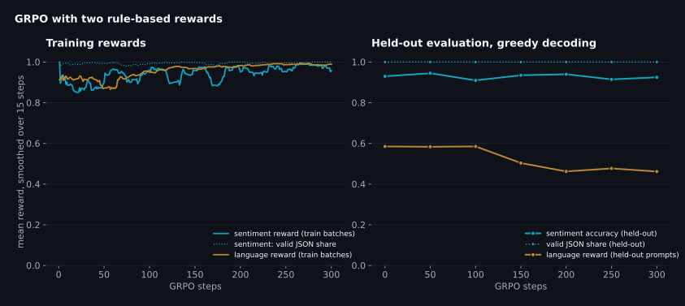
Read the two panels against each other, because that's the whole story. On the left, the policy's own samples: the sentiment reward starts at 0.89 and ends at 0.96, the language reward goes from 0.92 to 1.00. The optimiser did exactly what it was asked to and the training curves say success. On the right, the same model decoded greedily on prompts it never saw: sentiment accuracy 0.930 at step 0 and 0.925 at step 300, with every point in between inside the noise of 200 reviews; and the language reward going the wrong way, 0.59 to 0.46, while the Devanagari share it contains went up (0.93 to 0.99) and the answers got longer (63 to 102 words). Two different things went wrong and they're worth separating.
The sentiment half didn't move because there was nothing left to move. The cold-start examples had already taken the format to 100% and the accuracy to the low nineties, so most groups of eight samples were eight correct answers with identical scores, and a group with no spread contributes nothing: over the run, 59% of all groups had zero variance. That's not a bug in GRPO; it's the method telling you the reward has been saturated by the supervised stage. The cold start ablation below shows what the same loop does when it is given something to learn.
The language half is the more instructive failure, because the optimiser found a hole in the reward I had written specifically to close. The distinct-word factor saturates at 60% distinct words, and I chose 60% because that's roughly where real Hindi answers sit (the held-out instruction answers of sixty words or more have a median of 66% distinct words, because Hindi repeats its function words). So an answer that repeats a whole clause every thirty words still clears the bar, and repeating a clause is a cheap way to be long and fully Devanagari, which is what the other two factors pay for. Sampling at temperature 1 finds that pattern some of the time; greedy decoding, which follows the most probable path, finds it most of the time. On the full held-out set, 76% of the greedy answers loop after RL against 54% before it, and 45% of the sampled ones against 19%. The reward the loop was optimising, scored on its own samples, went up; the model got worse. If you remember one thing from this section, make it that pair of sentences.
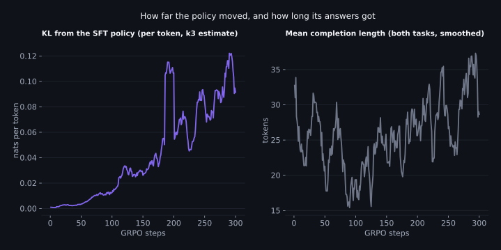
The KL is small throughout: 0.122 nats per token at the smoothed peak (single steps spike to 0.88), 0.091 at the end, which is a policy that has moved a little and deliberately. The completion length has the same shape as the KL. I mention this because the usual first response to a run that went wrong is to add the KL penalty back, and here it wouldn't have helped: the policy didn't run away from the SFT model, it took a short walk to a place the reward liked, and a penalty for distance would have slowed the walk without changing the destination. The fix is in the reward, so that's where the next run changed.
Reading the reward again
The repaired reward is the first one times a loop penalty: the share of repeated word
trigrams in the answer, which is under 7% for nine in ten of the held-out reference answers
and typically above 30% for an answer that loops, mapped linearly to a factor of 1 at zero repeats and 0
at 30%. Nothing else changed: same starting checkpoint, same prompts, same learning rate, same
group size, 200 steps; in the script it's the --reward v2 flag,
which swaps the function the loop above calls for the open prompts. Under the new reward a looping answer scores near zero,
so the group has spread again wherever the policy sometimes loops, and the gradient points
away from it.
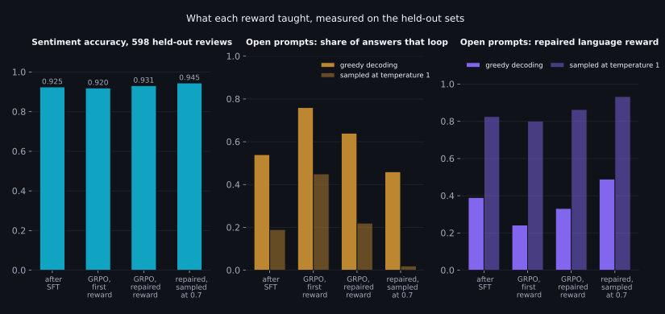
Half a fix, and the half it fixed is the informative part. On the distribution the loop actually samples from, temperature 1, the repaired reward did what it was written to do: the sampled score under the new reward went from 0.83 after SFT to 0.86, and the share of sampled answers that loop stayed at 22% against 19% before, where the first reward had let it climb to 45%. Sentiment accuracy on the full set came out at 0.931, the best of the three checkpoints by a margin that is inside the noise. But decode the same model greedily and 64% of its answers still loop, more than the 54% it started from, and the greedy score under the repaired reward went down, 0.39 to 0.33. The penalty can only act on answers the policy produces during training, and at temperature 1 a 135M policy rarely produces the greedy path; the training batches scored 0.96 on the open prompts by the end, which means the loop saw almost nothing to penalise. Reinforcement learning shapes the distribution it samples from, and no other. If the model will be served greedily, the samples have to look like greedy decoding, which is the last run in this section.
So the last run changes one number: the sampling temperature, from 1 to 0.7, with the repaired reward, 150 steps. The training batches now score 0.80 on the open prompts at the start instead of 0.91, because at 0.7 the policy's samples look much more like its greedy answers and a good share of them loop, and the penalty finally has something to push against. It pushes. On the full held-out sets the share of greedy answers that loop falls from 54% after SFT to 46%, the first run in this section to move that number the right way; the greedy score under the repaired reward goes from 0.39 to 0.49 and under the first reward from 0.58 to 0.72; the sampled answers almost never loop (2%); the answers got shorter, 65 to 54 words, rather than longer; and sentiment accuracy came out at 0.945, the best of any checkpoint in the post. This is the checkpoint the last section reports. Two things it isn't. It isn't a cure: nearly half the greedy answers still loop, and the fix for that is more likely in the supervised data than in the reward. And it isn't a general rule that lower is better; at 0.7 the groups have less spread everywhere (62% of them had none, against 58% at temperature 1), and a run that started from a weaker checkpoint might need the exploration. It's the narrower rule that the samples should resemble the decoding you'll serve, which I'd have called obvious before I spent two runs learning it. One last number, because I promised to watch it: the text model. Hindi bits per character on the 400-document held-out crawl set went from 1.50 after SFT to 1.59 after the first run, 1.52 after the repaired one and 1.51 after this one; on Wikipedia the first run sat at 1.88 and this one at 1.78. RL moved the text model by less than the supervised stage did, in the same direction, and the run that fixed the answers cost it the least.
How much cold start the reward needs
The other question the first run raised was whether the supervised stage had done RL's job for it. The clean way to ask is to run the same GRPO loop from three SFT checkpoints that differ only in how many labelled JSON examples were mixed in (none, 20, and the 100 of the main run) and compare the first 150 steps.
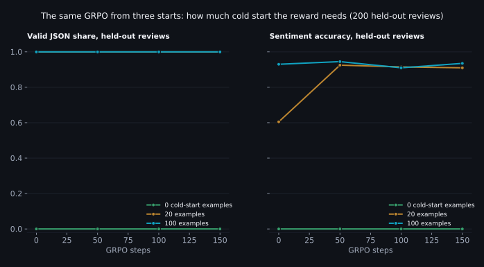
The answer has a floor and a ceiling, and both are visible. With no labelled examples the supervised model never produces the JSON, so the reward is zero for every sample in every group, every group has zero spread, and 150 steps of GRPO change nothing: 0% valid at the start, 0% at the end, while the loop cheerfully optimises the language reward on the other prompts. Nothing in the method can invent a behaviour it never samples; that's the floor, and it is exactly the R1 paper's reason for the cold start. With twenty examples the format is already at 100% and the accuracy at 60%, which is the interesting start: the reward has spread to work with and something to teach, and fifty steps later the accuracy is 0.925, level with the 100-example checkpoint before any RL, ending at 0.910 after 150. That is the picture the RLVR papers draw, at toy scale: a handful of demonstrations to make the reward reachable, and the reward does the rest. With a hundred examples the supervised stage has already done that work and RL's job on this task is finished before it starts, which is the ceiling, and why the main run's sentiment curve is flat. The practical reading: the number of cold-start examples you need is the number that makes the reward non-zero some of the time, and past that you're spending labelled data on something the reward would have taught for free.
Where it lands
The claim I set out to test was that a small model, taken through this pipeline on a small amount of data, can beat much larger stock models. Here is the measurement, on the held-out reviews and prompts, with the stock instruct models run through their own chat templates and the same instruction. The Qwen3 model was run with its thinking mode off. The blue rows are the four checkpoints from the last two sections; the one in bold is the one I'd ship.
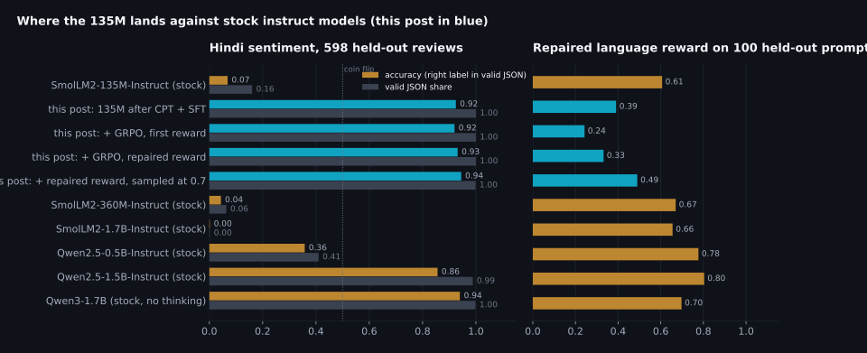
| Model | Parameters | Sentiment accuracy | Valid JSON | Accuracy when valid | Language reward (repaired) | Answers that loop |
|---|---|---|---|---|---|---|
| SmolLM2-135M-Instruct (stock) | 135M | 0.069 | 0.161 | 0.427 | 0.61 | 31% |
| SmolLM2-360M-Instruct (stock) | 362M | 0.043 | 0.064 | 0.684 | 0.67 | 13% |
| SmolLM2-1.7B-Instruct (stock) | 1,711M | 0.002 | 0.002 | 1.000 | 0.66 | 25% |
| Qwen2.5-0.5B-Instruct (stock) | 494M | 0.358 | 0.410 | 0.873 | 0.78 | 3% |
| Qwen2.5-1.5B-Instruct (stock) | 1,544M | 0.856 | 0.988 | 0.866 | 0.80 | 1% |
| Qwen3-1.7B (stock, thinking off) | 1,721M | 0.940 | 0.998 | 0.941 | 0.70 | 11% |
| This post, after CPT and SFT | 144M | 0.925 | 1.000 | 0.925 | 0.39 | 54% |
| This post, after GRPO with the first reward | 144M | 0.920 | 1.000 | 0.920 | 0.24 | 76% |
| This post, after GRPO with the repaired reward | 144M | 0.931 | 1.000 | 0.931 | 0.33 | 64% |
| This post, repaired reward, sampled at 0.7 | 144M | 0.945 | 0.998 | 0.946 | 0.49 | 46% |
On the task, the 135M after the full pipeline scores 0.945 on the 598 held-out reviews, with all but one answer in the format asked for. That is ahead of Qwen2.5-1.5B-Instruct (0.856, eleven times the parameters) and of every SmolLM2 instruct model, including the 1.7B, which almost never produces the JSON at all (0.002 valid; the "accuracy when valid" column rests on the one time it did). And it is level with Qwen3-1.7B (0.940; the gap is inside the noise of 598 reviews), a newer model trained on far more multilingual text, which follows the format without being taught it. So the sentence from the introduction holds with its qualifier attached: on a task the pipeline was pointed at, a 135M model beats most of the stock models ten times its size and ties the best of them.
Read the language column with its caveat. The reward is a floor check, not a quality score: it asks whether the answer is in Devanagari, of a sensible length, and not looping. The stock models clear it by answering briefly (sixteen to thirty-three words, often restating the question) and almost never looping; this post's model answers at length, in Hindi, and loops in nearly half of its greedy answers even after the last run, which the previous section is mostly about. A repetition penalty at inference time would hide the problem; I haven't applied one, because the point of the column is to show what the model does on its own.
The same prompts, six checkpoints
Numbers first, but the answers are what you'd actually see. Three fixed prompts, greedy decoding, the first 150 characters of each answer, at each stage of the pipeline. The first two are chat prompts; the third is a negative phone review under the sentiment instruction.
| Checkpoint | "What is the capital of India?" | "Give three steps to make tea." | Review: battery dies in two hours, camera blurry |
|---|---|---|---|
| Stock SmolLM2-135M (raw continuation) | । प्राप्त प्राप्त प्राप्त प्राप्त प्राप्त प्राप्त प्राप्त प्राप्त प्र | । प्राप्त प्राप्त प्राप्त प्राप्त प्राप्त प्राप्त प्राप्त प्राप्त प्र | २०१००००००००००००००००००००००००००००००००००००० |
| After continued pretraining (raw continuation) | 1991 में भारत ने चीन को 1991 में भारत के साथ 1991 में भारत के साथ 1991 में भारत के साथ 1991 में भारत के साथ 1991 में भारत के साथ 1991 में भारत के साथ … | 1. 1. 2. 3. 4. 5. 6. 7. 8. 9. 10. 11. 12. 13. 14. 15. 16. 17. 18. 19. 20. 21. 22 | 100000 से ज्यादा कैमरे की बैटरी 10 घंटे में खत्म हो जाती है। - 100000 से ज्यादा कैमरे की बैटरी 10 घंटे में खत्म हो जाती है। - 100000 से ज्यादा कैमरे क… |
| After SFT (chat) | भारत की राजधानी नई दिल्ली है। | 1. **चाय बनाने के लिए सामग्री:** चाय बनाने के लिए एक अच्छी तरह से तैयार होने वाली सामग्री के लिए, आप कुछ सरल चाय के लिए कुछ सामग्री और कुछ सॉस का उपयो… | {"label": "negative"} |
| After GRPO, first reward (chat) | भारत की राजधानी नई दिल्ली है। यह एक सार्वजनिक परिवहन और सार्वजनिक परिवहन के क्षेत्र में सबसे अधिक आबादी वाला शहर है। यह एक सार्वजनिक परिवहन और सार्वजन… | चाय बनाने के तीन चरण हैं। | {"label": "negative"} |
| After GRPO, repaired reward (chat) | भारत की राजधानी नई दिल्ली है। | चाय बनाने के तीन चरण हैं: 1. **प्रक्रिया:** एक बार जब आप चाय का आनंद लेते हैं, तो आप अपने शरीर को चाय के स्वाद और स्वाद से प्रभावित करते हैं। चाय के … | {"label": "negative"} |
| After GRPO, repaired reward, sampling at 0.7 (chat) | भारत की राजधानी नई दिल्ली है। | 1. **चाय बनाने के लिए सामग्री:** चाय का एक महत्वपूर्ण हिस्सा यह है कि आप इसे अच्छी तरह से तैयार करें। चाय के लिए आवश्यक सामग्री आमतौर पर पानी, दूध, और… | {"label": "negative"} |
What it cost
| Stage | GPU minutes | Tokens or samples | What it moved |
|---|---|---|---|
| Tokenizer extension | 0 (CPU, about 2) | 150M characters read | Hindi tokens per word 5.32 to 1.31 |
| Continued pretraining (main run) | 68 | 49.2M tokens | Hindi 2.35 to 1.25 bits per character; English 0.87 to 1.09 |
| Supervised fine-tuning (the run used) | 18 | 12,099 pairs plus 100 labelled reviews, 2.00 epochs | Answers in format; held-out answer loss 3.56 to 2.92; valid JSON 0% to 100% |
| GRPO (the run kept: repaired reward, sampling at 0.7) | 24 | 4,800 sampled answers | Sentiment accuracy 0.925 to 0.945; greedy answers that loop 54% to 46% |
| All SFT and GRPO runs together | 40 and 218 | three SFT runs, 5 GRPO runs | The cold-start and reward sections |
| Ablations and evaluation | about 200 | ten 400-step runs, one 1,200-step run, every model in the charts scored on two Hindi sets | The charts |
What I couldn't verify, and what I'd do next
- The scaling line is three points. The "if we keep going" chart fits a power law through three complete runs at different budgets. Three points fit anything. It says what the next few hundred million tokens would probably do, not what a billion would.
- One seed each. The ablations are single runs of 400 steps. Differences of a few thousandths of a bit per character between them are within what a different data order would produce; I've only drawn conclusions from gaps larger than that, and said so where they aren't.
- The held-out sets are small. 598 reviews put about one percentage point of standard error on an accuracy near 0.93, so the three blue rows in the last table are tied and the point to Qwen3-1.7B is barely outside noise. The 100 open prompts for the language reward are fewer still. The ranking of model families in the last chart is robust to that; the second decimal place isn't.
- The instruction data is machine translated, and I didn't filter it by back-translation the way Airavata did. Some of the Hindi in it is stiff. The model learned the stiffness too.
- Sarvam's numbers are from the model card and press coverage. Both Sarvam blog posts returned an error when fetched, so the OpenHathi vocabulary size and the Sarvam-1 training details are secondary-sourced and marked as such in the sources file.
- I measured bits per character, not benchmarks. There are Hindi benchmark suites (IndicXTREME and its successors), and a proper evaluation of the adapted model would run them. This post's claim is narrower: the language model got better on two held-out sets by a measured amount, and the post-trained model does one verifiable task better than most larger stock models.
- The looping is half solved. Nearly half of the shipped model's greedy answers to open prompts still repeat themselves. Sampling the RL batches at 0.7 was the change that moved it; the candidates I'd try next are lower still, penalising repeated n-grams at the token level rather than per answer, and mixing pretraining text back into the SFT stage so the model has less reason to fall into the instruction data's register.
- The English drift is larger than I'd accept in a product. 26% on the model's own pretraining distribution after continued pretraining, and more after SFT. The replay ablation says thirty percent English would have held most of it; I kept ten so the three scaling runs shared one recipe.
- The next post is the stage this one ends before: taking the post-trained model to one specific job with a small task-specific dataset, which is where most people's actual problem lives, and where LoRA, data quality and evaluation design matter more than anything here.
Closing note
Start from where the model started. Asked a question in Hindi, the stock SmolLM2-135M produced one word repeated until it ran out of room, because its tokenizer could not form a Hindi word and its weights had never seen one. It scored 2.35 bits per character on Hindi text, and its instruct sibling got 0.069 of a Hindi classification task right in the format asked for. After the pipeline in this post, on data it never trained on, the same 135M scores 1.26 on the crawl and 1.59 on Wikipedia, under every general-purpose stock model up to 1.7B; answers the question in one correct sentence and stops; and scores 0.945 on the classification task, level with Qwen3-1.7B, twelve times its size. The stages that did it were the tokenizer extension, 68 minutes of continued pretraining on 44.3M Hindi tokens, a supervised warm-up on 12,099 instruction pairs plus a hundred labelled examples, and reinforcement learning against two rewards a script checks. It learned a language it never knew, on one 8 GB GPU, in a working day, and the curve it learned it along had not flattened when I stopped.
The reason that matters beyond Hindi and beyond 135M is that nothing in the recipe is specific to the laptop. Every stage is the stage the labs describe in their papers, in the order they run it, and the scripts here are the loops those papers abbreviate. Scaling it is a change of quantities, not of method: more tokens of the language, more GPUs running the same training loop in data parallel, a larger starting model, a longer schedule, and the same evaluation discipline at every checkpoint. The things this post found the hard way (the tokenizer details that decide whether the GPU's time counts, the replay share, the cold start that makes a reward reachable, the reward the optimiser will read more carefully than you did) are the same things at any scale, because they are properties of the method, not of the machine. The one stage a lab has that this recipe doesn't is people labelling preferences, and the verifiable-reward branch of the field exists precisely to do without it.
The first three posts were about a machine and the bytes it can move. This one was about the other thing the machine can do with its afternoon, and the honest summary is that the whole published pipeline, minus the part that needs a thousand people to compare answers, ran on a laptop in a working day, and the stages that were supposed to move a number moved it by an amount I could measure, with the last stage the exception that taught the most. The tokenizer work was the surprise: not the part that needed the GPU, but the part that decided whether the GPU's time did anything. The reinforcement learning was the other surprise, in the opposite direction. Forty lines of arithmetic did exactly what they were told, three times, and twice what they were told was wrong in a way I could only see by decoding the model afterwards: a hundred labelled examples had already done the job the reward was written for, and the reward I wrote for the open-ended half paid for length and script and was cashed in with repetition. The third run fixed the sampling rather than the reward, and that was the one that moved the greedy answers. What a large lab has that I don't is the data, the annotators, and ten thousand GPUs for the pretraining. What they don't have that I do is the ability to read every line of the loop and every answer the model gave, and this post is my argument that the second thing is worth more than it looks, mostly because of how often it told me the training curve was lying.
Resources & Links
The model, the data and the libraries:
SmolLM2-135M and the SmolLM2 paper (Allal et al., 2025); FineWeb-2 (hin_Deva) and its paper (Penedo et al., 2025); FineWeb-Edu; Hindi Wikipedia (wikimedia/wikipedia, 20231101.hi), the out-of-distribution held-out set; alpaca-gpt4-hindi; IndicSentiment from IndicXTREME (Doddapaneni et al., 2023); tokenizers, transformers and PyTorch; TRL's GRPOTrainer documentation, the production version of the loop written out here.
Language adaptation and continued pretraining:
Chinese-LLaMA and Alpaca (Cui et al., 2023); Continual pre-training for cross-lingual adaptation: Japanese (Swallow) (Fujii et al., 2024); Simple and scalable strategies to continually pre-train LLMs (Ibrahim et al., 2024); FOCUS (Dobler and de Melo, 2023) and WECHSEL (Minixhofer et al., 2022) on embedding initialisation; OpenHathi (Sarvam, 2023) and Sarvam-1 (2024), with the caveat above; Airavata (Gala et al., 2024); Do all languages cost the same? (Ahia et al., 2023) and Tokenizers introduce unfairness between languages (Petrov et al., 2023).
Post-training at the labs:
InstructGPT (Ouyang et al., 2022); Constitutional AI (Bai et al., 2022); The Llama 3 herd of models (Meta, 2024); Qwen2.5 technical report (2024); Gemma 3 technical report (2025); DeepSeekMath (Shao et al., 2024), where GRPO comes from; DeepSeek-R1 (2025); Tülu 3 (Lambert et al., 2024), which named RLVR.